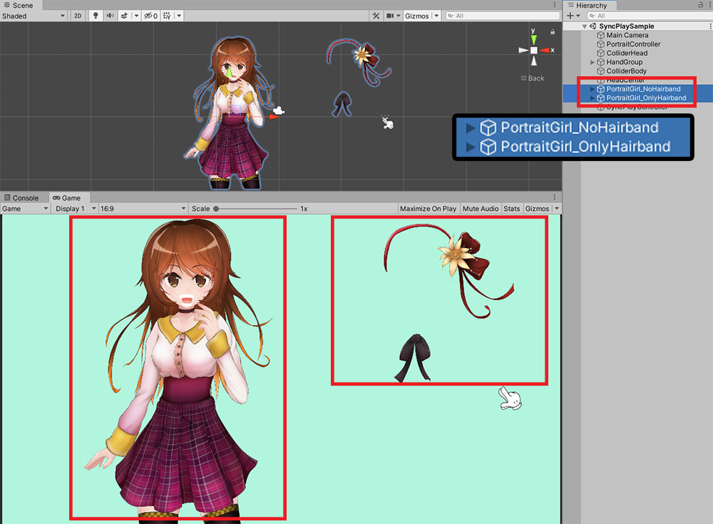
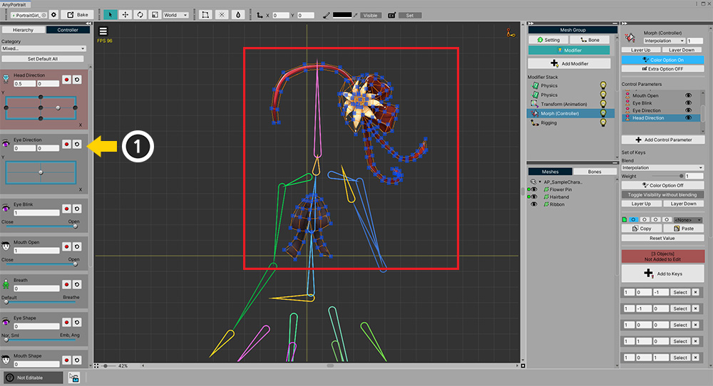
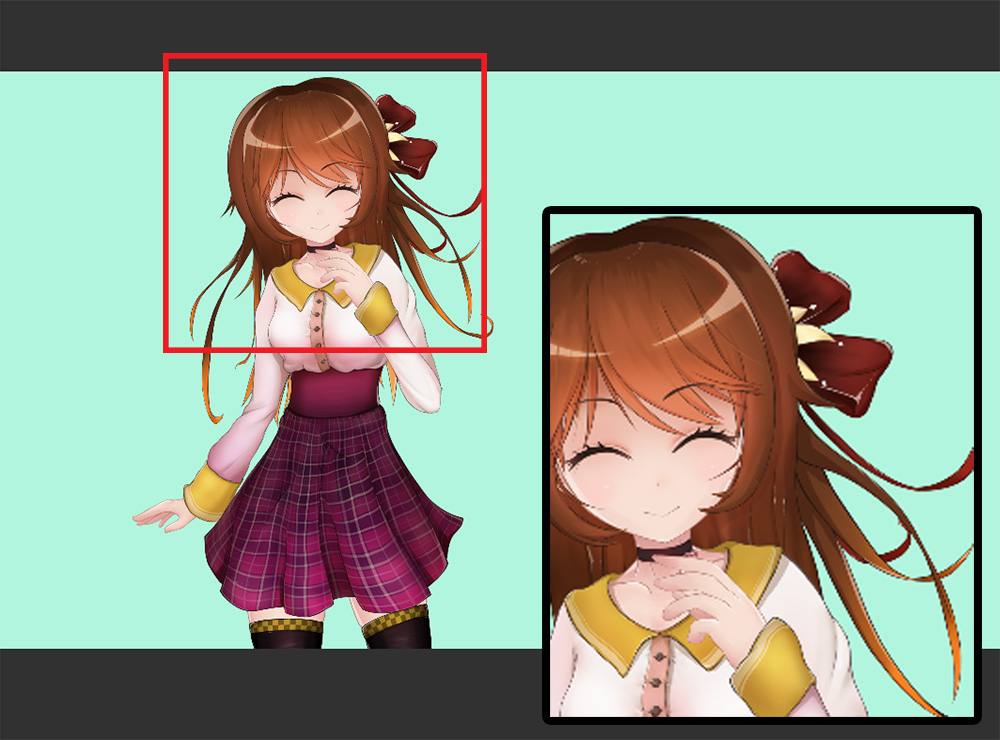
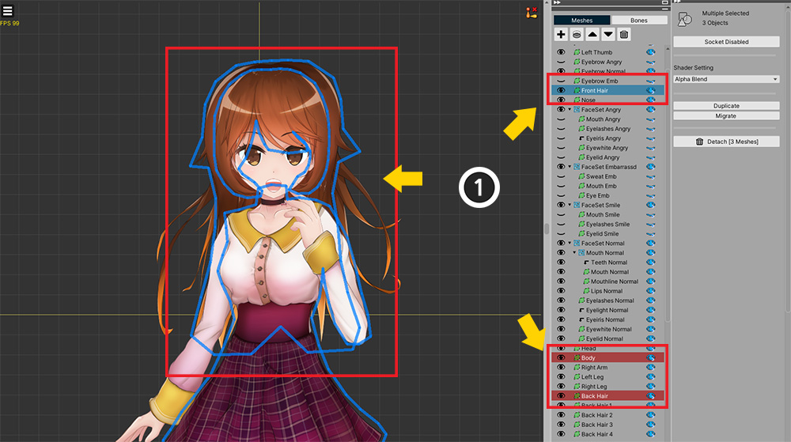
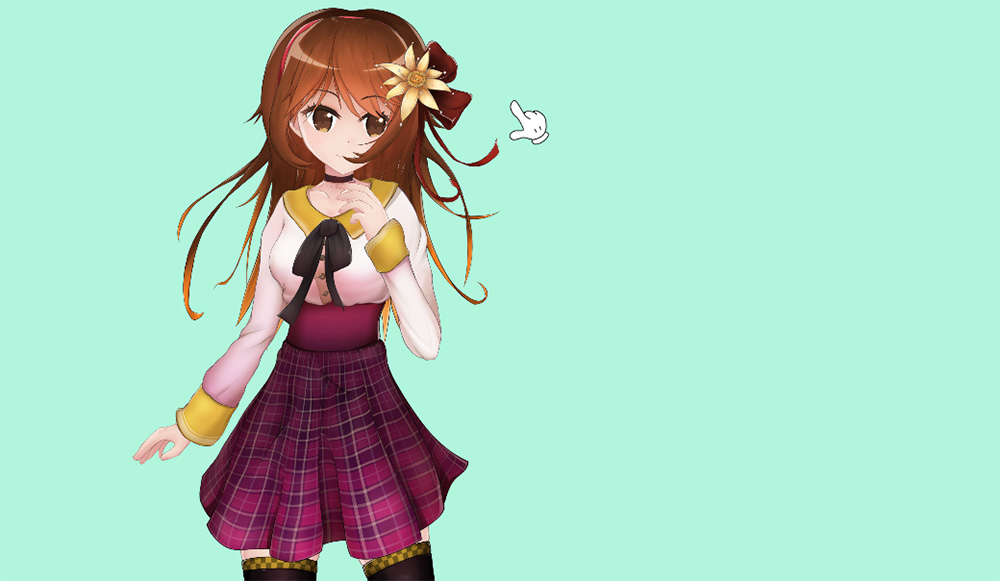

AnyPortrait > Manual > Synchronize with other characters
Synchronize with other characters
1.3.2
The Customize function to change the character's outfit or appearance in the game is an important factor.
We introduced the image replacement method (Related page), but many users gave us a lot of feedback after that.
The Synchronize function covered on this page is basically to connect with other characters and play the animation in the same way.
However, our team expects the concept of this function to be utilized for Customization.
This page covers how to utilize the Synchronize function based on what will be applied as the Customize function.
If you give us your feedback on this feature, we will further expand and further develop this concept.

We prepared a scene in which only the Hairband and ribbon (hereafter called "Hairband") was separated from the character of the demo.
Let's make the animation work only for Character and synchronize Hairband to Character.

For Synchronize, Animation and Control Parameter must be the same.
When you open Character, the control parameters are registered in the modifier.

(1) Character has 3 animations of "Idle, Smile, Angry".
(2) Remember the FPS and Length of this animations.

Opening Hairband with the editor, Control parameters must be same with the synchronization target.
Also, it must be implemented so that it can move as a modifier according to the control parameter.
(However, since bones are not synchronized, there is no need to make them identical.)

(1) The animation is also three of "Idle, Smile, Angry". If the names are different, they will not be synced.
(2) Each animation length and FPS must also be the same as the sync target.
Now, let's write the script below so that Hairband is synchronized with Character.
using UnityEngine;
using AnyPortrait;
public class SyncPlaySample : MonoBehaviour
{
public apPortrait character;
public apPortrait hairband;
void Update()
{
//Press the A key and the Hairband will sync to the Character.
if(Input.GetKeyDown(KeyCode.A))
{
hairband.Synchronize(character, true, true);
hairband.transform.position = character.transform.position;
}
//Press S to unsynchronize the Hairband.
if(Input.GetKeyDown(KeyCode.S))
{
hairband.Unsynchronize();
hairband.StopAll();
hairband.transform.position = new Vector3(10.0f, 0.0f, 0.0f);
}
}
}
Synchronization can be turned on or off using the Synchronize and Unsynchronize functions.
Synchronize function allows you to selectively synchronize Animation or Control parameter.
Here, I put two true values so that they all synchronize.
For detailed description of the function, refer to the related page.

(1) Create a new GameObject.
(2) Add the created script and assign Character and Hairband respectively.

Launch the game and press A key to see the Hairband attach to the Character and the animation and control parameters move in sync.

However, you can see that the rendering order of the meshes in Hairband is not correct.
You need to manually set the rendering order of the meshes of Hairband with a script.

(1) Open Character and check where the meshes of Hairband should be placed.
Let's remember the names of the "meshes just behind" the order in which the meshes in the Hairband should be rendered.

Let's make the Sorting Order of the Character's meshes be assigned differently according to the rendering order.
(1) Press the Bake button.
(2) Select Settings tab.
(3) Change Sorting Order Option to Depth To Order, and set Order Per Depth to 2.
Order Per Depth must be at least 2 to be able to put new meshes between existing meshes.
After setup, execute Bake.

(1) Open Hairband and remember all the mesh names.
Now, add the code for specifying Sorting Order to the script as shown below using the names of the meshes you remembered earlier.
using UnityEngine;
using AnyPortrait;
public class SyncPlaySample : MonoBehaviour
{
public apPortrait character;
public apPortrait hairband;
void Update()
{
//Press the A key and the Hairband will sync to the Character.
if(Input.GetKeyDown(KeyCode.A))
{
hairband.Synchronize(character, true, true);
hairband.transform.position = character.transform.position;
//"Flower Pin" is in front of "Front Hair".
hairband.SetSortingOrder("Flower Pin", character.GetSortingOrder("Front Hair") + 1);
//"Ribbon" placed in front of "Body".
hairband.SetSortingOrder("Ribbon", character.GetSortingOrder("Body") + 1);
//"Hairband" placed in front of "Back Hair".
hairband.SetSortingOrder("Hairband", character.GetSortingOrder("Back Hair") + 1);
}
//Press S to unsynchronize the Hairband.
if(Input.GetKeyDown(KeyCode.S))
{
hairband.Unsynchronize();
hairband.StopAll();
hairband.transform.position = new Vector3(10.0f, 0.0f, 0.0f);
}
}
}

Relaunch the game and press A key and you can see the meshes in the Hairband rendered in their proper positions.

If you press the S key, you can see that the synchronization is canceled by the Unsynchronize function.